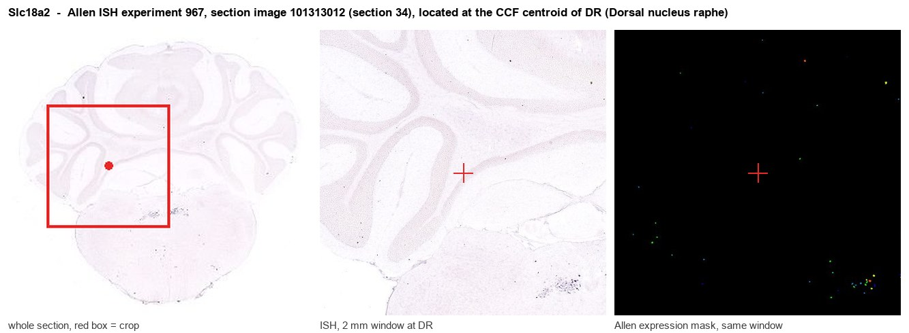
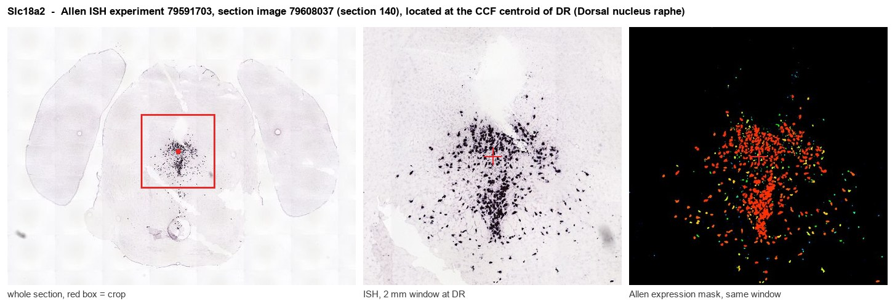
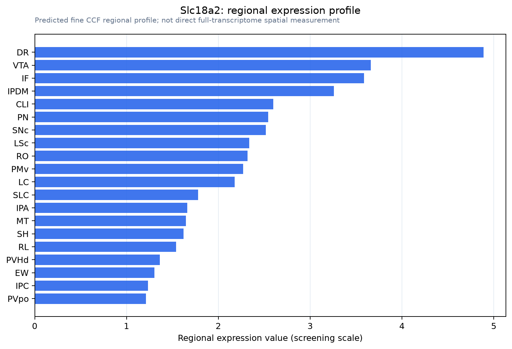

Slc18a2
Spatial tier: RESTRICTED · Class: NEUROMODULATORY_SIGNAL · Top region: DR (Dorsal nucleus raphe) · Positive regions: 18/554
Function in DR: evidence, prediction, innovation
- Gene function
- SLC18A2 encodes VMAT2, the vesicular monoamine transporter. It is a twelve-transmembrane proton-antiporter that uses the vesicular proton gradient to pump cytosolic serotonin, dopamine, noradrenaline and histamine into synaptic vesicles and dense-core vesicles. Without it monoamines cannot be stored or exocytosed; it is the target of reserpine and tetrabenazine and the point at which amphetamines reverse monoamine flux.
- Region function
- The dorsal raphe nucleus is the largest serotonergic cell group in the brain, projecting broadly to cortex, striatum and limbic structures; it shapes mood, patience and reward processing, arousal state and stress responses, and also contains GABAergic, dopaminergic and glutamatergic neurons.
- Published in this region
- direct Direct. Narboux-Neme et al. 2011 conditionally deleted Slc18a2 from serotonergic neurons and produced severe brain serotonin depletion, establishing that VMAT2 is obligatory for serotonin storage in raphe neurons. Colgan et al. 2009 showed activity-dependent, VMAT2-mediated depletion of the nucleus that supports somatodendritic serotonin release in dorsal raphe neurons, and Cliburn et al. 2017 provided a detailed immunochemical map of VMAT2 across mouse brain including the raphe.
- Predicted function
- Prediction: the interesting remaining question is dose rather than presence - how graded VMAT2 levels set the balance between axonal and somatodendritic serotonin release in DR. Partial, adult-onset knockdown of Slc18a2 in Pet1-Cre neurons is predicted to reduce somatodendritic serotonin release and 5-HT1A autoinhibition disproportionately relative to terminal release, producing paradoxically elevated raphe firing, and behaviourally to shift animals toward impulsive, low-patience choices; low-dose tetrabenazine locally infused into DR should reproduce this signature acutely.
- Innovation
- ★☆☆☆☆ 1/5 VMAT2 in raphe serotonergic neurons has been examined with conditional knockouts, detailed anatomy and extensive pharmacology.
- Tools
- Slc18a2 floxed and Slc18a2 heterozygous mice, VMAT2-knockdown (VMAT2-LO) lines; inhibitors reserpine, tetrabenazine, dihydrotetrabenazine and the PET tracer [18F]AV-133; anti-VMAT2 antibodies; Pet1-Cre and Sert-Cre for serotonergic restriction; false fluorescent neurotransmitters for imaging vesicular loading.
- References
Direct evidence located at the region

Allen ISH experiment 967, section image 101313012 (section 34): the section that contains the CCF centroid of Dorsal nucleus raphe according to the Allen image-to-atlas alignment (reference_to_image), with a 2 mm window around that point. Left: whole section, red box = window. Middle: ISH signal. Right: Allen's expression-mask view of the same window. open this image in the Allen viewer

Allen ISH experiment 79591703, section image 79608037 (section 140): the section that contains the CCF centroid of Dorsal nucleus raphe according to the Allen image-to-atlas alignment (reference_to_image), with a 2 mm window around that point. Left: whole section, red box = window. Middle: ISH signal. Right: Allen's expression-mask view of the same window. open this image in the Allen viewer
Direct spatial evidence

Regional expression figure

Predicted WMB × fine-CCF profile; not direct full-transcriptome spatial measurement.
Spatial profile
Evidence and specificity
- Evidence status
- PREDICTED_FINE
- Direct sources
- None; predicted localization only
- Exclusive threshold
- 12 positive regions out of 554
- Spatial specificity
- 0.337
- Top-region fraction
- 0.068
- Filter status
- PASS
Interpretation limits
- Cell-type-to-region projection is imputed expression, not direct spatial measurement.
- Adult reference atlases do not establish stability across age, sex, strain, state, or disease.
- Transcript abundance does not guarantee protein abundance or genetic-tool performance.